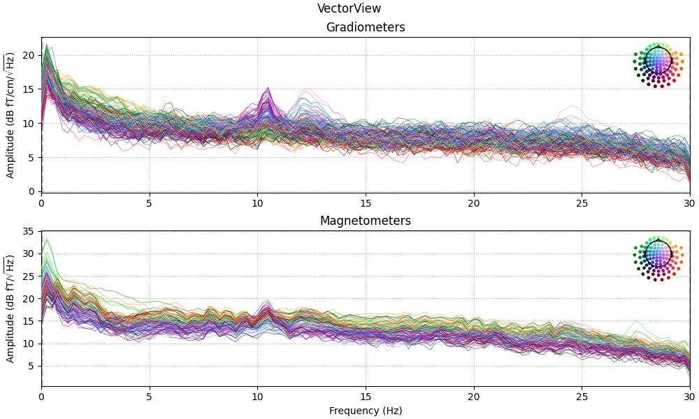
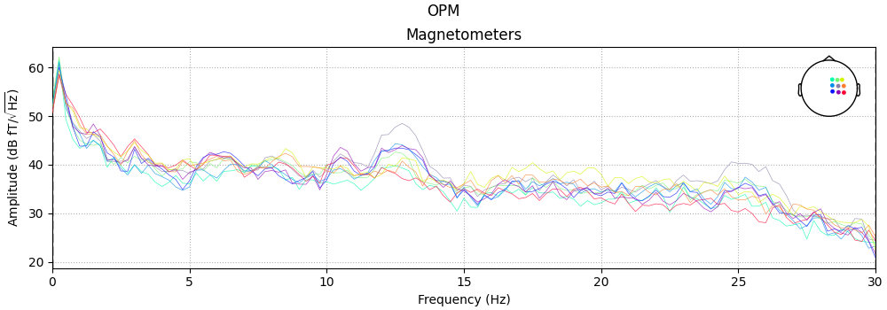

Note
Go to the end to download the full example code.
Compute source power spectral density (PSD) of VectorView and OPM data#
Here we compute the resting state from raw for data recorded using a Neuromag VectorView system and a custom OPM system. The pipeline is meant to mostly follow the Brainstorm [1] OMEGA resting tutorial pipeline. The steps we use are:
Filtering: downsample heavily.
Artifact detection: use SSP for EOG and ECG.
Source localization: dSPM, depth weighting, cortically constrained.
Frequency: power spectral density (Welch), 4 s window, 50% overlap.
Standardize: normalize by relative power for each source.
Preprocessing#
# Authors: Denis Engemann <denis.engemann@gmail.com>
# Luke Bloy <luke.bloy@gmail.com>
# Eric Larson <larson.eric.d@gmail.com>
#
# License: BSD-3-Clause
# Copyright the MNE-Python contributors.
import mne
from mne.filter import next_fast_len
print(__doc__)
data_path = mne.datasets.opm.data_path()
subject = "OPM_sample"
subjects_dir = data_path / "subjects"
bem_dir = subjects_dir / subject / "bem"
bem_fname = bem_dir / f"{subject}-5120-5120-5120-bem-sol.fif"
src_fname = bem_dir / f"{subject}-oct6-src.fif"
vv_fname = data_path / "MEG" / "SQUID" / "SQUID_resting_state.fif"
vv_erm_fname = data_path / "MEG" / "SQUID" / "SQUID_empty_room.fif"
vv_trans_fname = data_path / "MEG" / "SQUID" / "SQUID-trans.fif"
opm_fname = data_path / "MEG" / "OPM" / "OPM_resting_state_raw.fif"
opm_erm_fname = data_path / "MEG" / "OPM" / "OPM_empty_room_raw.fif"
opm_trans = mne.transforms.Transform("head", "mri") # use identity transform
opm_coil_def_fname = data_path / "MEG" / "OPM" / "coil_def.dat"
Load data, resample. We will store the raw objects in dicts with entries “vv” and “opm” to simplify housekeeping and simplify looping later.
raws = dict()
raw_erms = dict()
new_sfreq = 60.0 # Nyquist frequency (30 Hz) < line noise freq (50 Hz)
raws["vv"] = mne.io.read_raw_fif(vv_fname, verbose="error") # ignore naming
raws["vv"].load_data().resample(new_sfreq, method="polyphase")
raws["vv"].info["bads"] = ["MEG2233", "MEG1842"]
raw_erms["vv"] = mne.io.read_raw_fif(vv_erm_fname, verbose="error")
raw_erms["vv"].load_data().resample(new_sfreq, method="polyphase")
raw_erms["vv"].info["bads"] = ["MEG2233", "MEG1842"]
raws["opm"] = mne.io.read_raw_fif(opm_fname)
raws["opm"].load_data().resample(new_sfreq, method="polyphase")
raw_erms["opm"] = mne.io.read_raw_fif(opm_erm_fname)
raw_erms["opm"].load_data().resample(new_sfreq, method="polyphase")
# Make sure our assumptions later hold
assert raws["opm"].info["sfreq"] == raws["vv"].info["sfreq"]
Reading 0 ... 61999 = 0.000 ... 61.999 secs...
Finding events on: STI101
Polyphase resampling neighborhood: ±2 input samples
Finding events on: STI101
Reading 0 ... 60999 = 0.000 ... 60.999 secs...
Finding events on: STI101
Polyphase resampling neighborhood: ±2 input samples
Finding events on: STI101
Opening raw data file /home/circleci/mne_data/MNE-OPM-data/MEG/OPM/OPM_resting_state_raw.fif...
Isotrak not found
Range : 0 ... 61999 = 0.000 ... 61.999 secs
Ready.
Reading 0 ... 61999 = 0.000 ... 61.999 secs...
Finding events on: STI101
Trigger channel STI101 has a non-zero initial value of 256 (consider using initial_event=True to detect this event)
Polyphase resampling neighborhood: ±2 input samples
Finding events on: STI101
Trigger channel STI101 has a non-zero initial value of 256 (consider using initial_event=True to detect this event)
Opening raw data file /home/circleci/mne_data/MNE-OPM-data/MEG/OPM/OPM_empty_room_raw.fif...
Isotrak not found
Range : 0 ... 61999 = 0.000 ... 61.999 secs
Ready.
Reading 0 ... 61999 = 0.000 ... 61.999 secs...
Finding events on: STI101
Trigger channel STI101 has a non-zero initial value of 256 (consider using initial_event=True to detect this event)
Polyphase resampling neighborhood: ±2 input samples
Finding events on: STI101
Trigger channel STI101 has a non-zero initial value of 256 (consider using initial_event=True to detect this event)
Explore data
titles = dict(vv="VectorView", opm="OPM")
kinds = ("vv", "opm")
n_fft = next_fast_len(int(round(4 * new_sfreq)))
print(f"Using n_fft={n_fft} ({n_fft / raws['vv'].info['sfreq']:0.1f} s)")
for kind in kinds:
fig = (
raws[kind]
.compute_psd(n_fft=n_fft, proj=True)
.plot(picks="data", exclude="bads", amplitude=True)
)
fig.suptitle(titles[kind])
- 
- 
Using n_fft=240 (4.0 s)
Created an SSP operator (subspace dimension = 13)
13 projection items activated
SSP projectors applied...
Effective window size : 4.000 (s)
Plotting amplitude spectral density (dB=True).
No projector specified for this dataset. Please consider the method self.add_proj.
Effective window size : 4.000 (s)
Plotting amplitude spectral density (dB=True).
Alignment and forward#
# Here we use a reduced size source space (oct5) just for speed
src = mne.setup_source_space(subject, "oct5", add_dist=False, subjects_dir=subjects_dir)
# This line removes source-to-source distances that we will not need.
# We only do it here to save a bit of memory, in general this is not required.
del src[0]["dist"], src[1]["dist"]
bem = mne.read_bem_solution(bem_fname)
# For speed, let's just use a 1-layer BEM
bem = mne.make_bem_solution(bem["surfs"][-1:])
fwd = dict()
# check alignment and generate forward for VectorView
kwargs = dict(azimuth=0, elevation=90, distance=0.6, focalpoint=(0.0, 0.0, 0.0))
fig = mne.viz.plot_alignment(
raws["vv"].info,
trans=vv_trans_fname,
subject=subject,
subjects_dir=subjects_dir,
dig=True,
coord_frame="mri",
surfaces=("head", "white"),
)
mne.viz.set_3d_view(figure=fig, **kwargs)
fwd["vv"] = mne.make_forward_solution(
raws["vv"].info, vv_trans_fname, src, bem, eeg=False, verbose=True
)
Setting up the source space with the following parameters:
SUBJECTS_DIR = /home/circleci/mne_data/MNE-OPM-data/subjects
Subject = OPM_sample
Surface = white
Octahedron subdivision grade 5
>>> 1. Creating the source space...
Doing the octahedral vertex picking...
Loading /home/circleci/mne_data/MNE-OPM-data/subjects/OPM_sample/surf/lh.white...
Mapping lh OPM_sample -> oct (5) ...
Triangle neighbors and vertex normals...
Loading geometry from /home/circleci/mne_data/MNE-OPM-data/subjects/OPM_sample/surf/lh.sphere...
Setting up the triangulation for the decimated surface...
loaded lh.white 1026/169022 selected to source space (oct = 5)
Loading /home/circleci/mne_data/MNE-OPM-data/subjects/OPM_sample/surf/rh.white...
Mapping rh OPM_sample -> oct (5) ...
Triangle neighbors and vertex normals...
Loading geometry from /home/circleci/mne_data/MNE-OPM-data/subjects/OPM_sample/surf/rh.sphere...
Setting up the triangulation for the decimated surface...
loaded rh.white 1026/169992 selected to source space (oct = 5)
You are now one step closer to computing the gain matrix
Loading surfaces...
Loading the solution matrix...
Three-layer model surfaces loaded.
Loaded linear collocation BEM solution from /home/circleci/mne_data/MNE-OPM-data/subjects/OPM_sample/bem/OPM_sample-5120-5120-5120-bem-sol.fif
Homogeneous model surface loaded.
Computing the linear collocation solution...
Matrix coefficients...
inner skull (2562) -> inner skull (2562) ...
Inverting the coefficient matrix...
Solution ready.
BEM geometry computations complete.
Using outer_skin.surf for head surface.
Getting helmet for system 306m
Channel types:: grad: 202, mag: 102
Source space : <SourceSpaces: [<surface (lh), n_vertices=169022, n_used=1026>, <surface (rh), n_vertices=169992, n_used=1026>] MRI (surface RAS) coords, subject 'OPM_sample', ~25.9 MiB>
MRI -> head transform : /home/circleci/mne_data/MNE-OPM-data/MEG/SQUID/SQUID-trans.fif
Measurement data : instance of Info
Conductor model : instance of ConductorModel
Accurate field computations
Do computations in head coordinates
Free source orientations
Read 2 source spaces a total of 2052 active source locations
Coordinate transformation: MRI (surface RAS) -> head
0.995623 -0.029776 -0.088592 1.15 mm
0.062622 0.916188 0.395825 5.31 mm
0.069381 -0.399641 0.914042 25.88 mm
0.000000 0.000000 0.000000 1.00
Read 306 MEG channels from info
105 coil definitions read
Coordinate transformation: MEG device -> head
0.993107 -0.074371 -0.090590 0.76 mm
0.079171 0.995577 0.050589 -13.97 mm
0.086427 -0.057412 0.994603 60.91 mm
0.000000 0.000000 0.000000 1.00
MEG coil definitions created in head coordinates.
Source spaces are now in head coordinates.
Employing the head->MRI coordinate transform with the BEM model.
BEM model instance of ConductorModel is now set up
Source spaces are in head coordinates.
Checking that the sources are inside the surface (will take a few...)
Checking surface interior status for 1026 points...
Found 335/1026 points inside an interior sphere of radius 51.5 mm
Found 0/1026 points outside an exterior sphere of radius 102.1 mm
Found 0/ 691 points outside using surface Qhull
Found 0/ 691 points outside using solid angles
Total 1026/1026 points inside the surface
Interior check completed in 672.5 ms
Checking surface interior status for 1026 points...
Found 334/1026 points inside an interior sphere of radius 51.5 mm
Found 0/1026 points outside an exterior sphere of radius 102.1 mm
Found 0/ 692 points outside using surface Qhull
Found 0/ 692 points outside using solid angles
Total 1026/1026 points inside the surface
Interior check completed in 639.5 ms
Checking surface interior status for 306 points...
Found 0/306 points inside an interior sphere of radius 51.5 mm
Found 306/306 points outside an exterior sphere of radius 102.1 mm
Found 0/ 0 points outside using surface Qhull
Found 0/ 0 points outside using solid angles
Total 0/306 points inside the surface
Interior check completed in 25.4 ms
Composing the field computation matrix...
Computing MEG at 2052 source locations (free orientations)...
Finished.
And for OPM:
with mne.use_coil_def(opm_coil_def_fname):
fig = mne.viz.plot_alignment(
raws["opm"].info,
trans=opm_trans,
subject=subject,
subjects_dir=subjects_dir,
dig=False,
coord_frame="mri",
surfaces=("head", "white"),
)
mne.viz.set_3d_view(figure=fig, **kwargs)
fwd["opm"] = mne.make_forward_solution(
raws["opm"].info, opm_trans, src, bem, eeg=False, verbose=True
)
del src, bem

Using outer_skin.surf for head surface.
Getting helmet for system unknown (derived from 9 MEG channel locations)
Channel types:: mag: 9
Source space : <SourceSpaces: [<surface (lh), n_vertices=169022, n_used=1026>, <surface (rh), n_vertices=169992, n_used=1026>] MRI (surface RAS) coords, subject 'OPM_sample', ~25.9 MiB>
MRI -> head transform : instance of Transform
Measurement data : instance of Info
Conductor model : instance of ConductorModel
Accurate field computations
Do computations in head coordinates
Free source orientations
Read 2 source spaces a total of 2052 active source locations
Coordinate transformation: MRI (surface RAS) -> head
1.000000 0.000000 0.000000 0.00 mm
0.000000 1.000000 0.000000 0.00 mm
0.000000 0.000000 1.000000 0.00 mm
0.000000 0.000000 0.000000 1.00
Read 9 MEG channels from info
2 coil definitions read
105 coil definitions read
Coordinate transformation: MEG device -> head
0.999800 0.015800 -0.009200 0.10 mm
-0.018100 0.930500 -0.365900 16.60 mm
0.002800 0.366000 0.930600 -14.40 mm
0.000000 0.000000 0.000000 1.00
MEG coil definitions created in head coordinates.
Source spaces are now in head coordinates.
Employing the head->MRI coordinate transform with the BEM model.
BEM model instance of ConductorModel is now set up
Source spaces are in head coordinates.
Checking that the sources are inside the surface (will take a few...)
Checking surface interior status for 1026 points...
Found 335/1026 points inside an interior sphere of radius 51.5 mm
Found 0/1026 points outside an exterior sphere of radius 102.1 mm
Found 0/ 691 points outside using surface Qhull
Found 0/ 691 points outside using solid angles
Total 1026/1026 points inside the surface
Interior check completed in 759.2 ms
Checking surface interior status for 1026 points...
Found 334/1026 points inside an interior sphere of radius 51.5 mm
Found 0/1026 points outside an exterior sphere of radius 102.1 mm
Found 0/ 692 points outside using surface Qhull
Found 0/ 692 points outside using solid angles
Total 1026/1026 points inside the surface
Interior check completed in 671.5 ms
Checking surface interior status for 9 points...
Found 0/9 points inside an interior sphere of radius 51.5 mm
Found 0/9 points outside an exterior sphere of radius 102.1 mm
Found 9/9 points outside using surface Qhull
Found 0/0 points outside using solid angles
Total 0/9 points inside the surface
Interior check completed in 24.7 ms
Composing the field computation matrix...
Computing MEG at 2052 source locations (free orientations)...
Finished.
Compute and apply inverse to PSD estimated using multitaper + Welch. Group into frequency bands, then normalize each source point and sensor independently. This makes the value of each sensor point and source location in each frequency band the percentage of the PSD accounted for by that band.
freq_bands = dict(alpha=(8, 12), beta=(15, 29))
topos = dict(vv=dict(), opm=dict())
stcs = dict(vv=dict(), opm=dict())
snr = 3.0
lambda2 = 1.0 / snr**2
for kind in kinds:
noise_cov = mne.compute_raw_covariance(raw_erms[kind])
inverse_operator = mne.minimum_norm.make_inverse_operator(
raws[kind].info, forward=fwd[kind], noise_cov=noise_cov, verbose=True
)
stc_psd, sensor_psd = mne.minimum_norm.compute_source_psd(
raws[kind],
inverse_operator,
lambda2=lambda2,
n_fft=n_fft,
dB=False,
return_sensor=True,
verbose=True,
)
topo_norm = sensor_psd.data.sum(axis=1, keepdims=True)
stc_norm = stc_psd.sum() # same operation on MNE object, sum across freqs
# Normalize each source point by the total power across freqs
for band, limits in freq_bands.items():
data = sensor_psd.copy().crop(*limits).data.sum(axis=1, keepdims=True)
topos[kind][band] = mne.EvokedArray(100 * data / topo_norm, sensor_psd.info)
stcs[kind][band] = 100 * stc_psd.copy().crop(*limits).sum() / stc_norm.data
del inverse_operator
del fwd, raws, raw_erms
Using up to 305 segments
Number of samples used : 3660
[done]
Converting forward solution to surface orientation
No patch info available. The standard source space normals will be employed in the rotation to the local surface coordinates....
Converting to surface-based source orientations...
[done]
info["bads"] and noise_cov["bads"] do not match, excluding bad channels from both
Computing inverse operator with 304 channels.
304 out of 306 channels remain after picking
Selected 304 channels
Creating the depth weighting matrix...
202 planar channels
limit = 1969/2052 = 10.014611
scale = 3.18765e-08 exp = 0.8
Applying loose dipole orientations to surface source spaces: 0.2
Whitening the forward solution.
Created an SSP operator (subspace dimension = 13)
Computing rank from covariance with rank=None
Using tolerance 7.8e-13 (2.2e-16 eps * 304 dim * 12 max singular value)
Estimated rank (mag + grad): 291
MEG: rank 291 computed from 304 data channels with 13 projectors
Setting small MEG eigenvalues to zero (without PCA)
Creating the source covariance matrix
Adjusting source covariance matrix.
Computing SVD of whitened and weighted lead field matrix.
largest singular value = 6.34225
scaling factor to adjust the trace = 5.22911e+19 (nchan = 304 nzero = 13)
Not setting metadata
31 matching events found
No baseline correction applied
Created an SSP operator (subspace dimension = 13)
13 projection items activated
Considering frequencies 0.0 ... 200.0 Hz
Preparing the inverse operator for use...
Scaled noise and source covariance from nave = 1 to nave = 1
Created the regularized inverter
Created an SSP operator (subspace dimension = 13)
Created the whitener using a noise covariance matrix with rank 291 (13 small eigenvalues omitted)
Computing noise-normalization factors (dSPM)...
[done]
Picked 304 channels from the data
Computing inverse...
Eigenleads need to be weighted ...
Reducing data rank 304 -> 291
Using hann windowing on at most 31 epochs
0%| | : 0/31 [00:00<?, ?it/s]
3%|▎ | : 1/31 [00:00<00:03, 8.34it/s]
6%|▋ | : 2/31 [00:00<00:03, 9.52it/s]
10%|▉ | : 3/31 [00:00<00:02, 10.12it/s]
13%|█▎ | : 4/31 [00:00<00:02, 10.40it/s]
16%|█▌ | : 5/31 [00:00<00:02, 10.43it/s]
19%|█▉ | : 6/31 [00:00<00:02, 10.49it/s]
23%|██▎ | : 7/31 [00:00<00:02, 10.64it/s]
26%|██▌ | : 8/31 [00:00<00:02, 10.69it/s]
29%|██▉ | : 9/31 [00:00<00:02, 10.68it/s]
32%|███▏ | : 10/31 [00:00<00:01, 10.67it/s]
35%|███▌ | : 11/31 [00:01<00:01, 10.70it/s]
39%|███▊ | : 12/31 [00:01<00:01, 10.71it/s]
42%|████▏ | : 13/31 [00:01<00:01, 10.74it/s]
45%|████▌ | : 14/31 [00:01<00:01, 10.69it/s]
48%|████▊ | : 15/31 [00:01<00:01, 10.70it/s]
52%|█████▏ | : 16/31 [00:01<00:01, 10.73it/s]
55%|█████▍ | : 17/31 [00:01<00:01, 10.76it/s]
58%|█████▊ | : 18/31 [00:01<00:01, 10.74it/s]
61%|██████▏ | : 19/31 [00:01<00:01, 10.74it/s]
65%|██████▍ | : 20/31 [00:01<00:01, 10.70it/s]
68%|██████▊ | : 21/31 [00:01<00:00, 10.71it/s]
71%|███████ | : 22/31 [00:02<00:00, 10.72it/s]
74%|███████▍ | : 23/31 [00:02<00:00, 10.72it/s]
77%|███████▋ | : 24/31 [00:02<00:00, 10.73it/s]
81%|████████ | : 25/31 [00:02<00:00, 10.73it/s]
84%|████████▍ | : 26/31 [00:02<00:00, 10.73it/s]
87%|████████▋ | : 27/31 [00:02<00:00, 10.70it/s]
90%|█████████ | : 28/31 [00:02<00:00, 10.72it/s]
94%|█████████▎| : 29/31 [00:02<00:00, 10.74it/s]
97%|█████████▋| : 30/31 [00:02<00:00, 10.75it/s]
97%|█████████▋| : 30/31 [00:02<00:00, 10.71it/s]
Using up to 310 segments
Number of samples used : 3720
[done]
Converting forward solution to surface orientation
No patch info available. The standard source space normals will be employed in the rotation to the local surface coordinates....
Converting to surface-based source orientations...
[done]
Computing inverse operator with 9 channels.
9 out of 9 channels remain after picking
Selected 9 channels
Creating the depth weighting matrix...
9 magnetometer or axial gradiometer channels
limit = 1698/2052 = 10.007069
scale = 5.0841e-11 exp = 0.8
Applying loose dipole orientations to surface source spaces: 0.2
Whitening the forward solution.
Computing rank from covariance with rank=None
Using tolerance 3e-13 (2.2e-16 eps * 9 dim * 1.5e+02 max singular value)
Estimated rank (mag): 9
MAG: rank 9 computed from 9 data channels with 0 projectors
Setting small MAG eigenvalues to zero (without PCA)
Creating the source covariance matrix
Adjusting source covariance matrix.
Computing SVD of whitened and weighted lead field matrix.
largest singular value = 2.44071
scaling factor to adjust the trace = 5.21355e+17 (nchan = 9 nzero = 0)
Not setting metadata
31 matching events found
No baseline correction applied
0 projection items activated
Considering frequencies 0.0 ... 200.0 Hz
Preparing the inverse operator for use...
Scaled noise and source covariance from nave = 1 to nave = 1
Created the regularized inverter
The projection vectors do not apply to these channels.
Created the whitener using a noise covariance matrix with rank 9 (0 small eigenvalues omitted)
Computing noise-normalization factors (dSPM)...
[done]
Picked 9 channels from the data
Computing inverse...
Eigenleads need to be weighted ...
Reducing data rank 9 -> 9
Using hann windowing on at most 31 epochs
0%| | : 0/31 [00:00<?, ?it/s]
3%|▎ | : 1/31 [00:00<00:00, 37.44it/s]
6%|▋ | : 2/31 [00:00<00:00, 38.97it/s]
10%|▉ | : 3/31 [00:00<00:00, 39.29it/s]
13%|█▎ | : 4/31 [00:00<00:00, 39.09it/s]
16%|█▌ | : 5/31 [00:00<00:00, 38.69it/s]
19%|█▉ | : 6/31 [00:00<00:00, 39.12it/s]
23%|██▎ | : 7/31 [00:00<00:00, 39.27it/s]
26%|██▌ | : 8/31 [00:00<00:00, 39.66it/s]
29%|██▉ | : 9/31 [00:00<00:00, 39.75it/s]
32%|███▏ | : 10/31 [00:00<00:00, 39.76it/s]
35%|███▌ | : 11/31 [00:00<00:00, 39.83it/s]
39%|███▊ | : 12/31 [00:00<00:00, 39.83it/s]
42%|████▏ | : 13/31 [00:00<00:00, 39.56it/s]
45%|████▌ | : 14/31 [00:00<00:00, 39.09it/s]
48%|████▊ | : 15/31 [00:00<00:00, 38.77it/s]
52%|█████▏ | : 16/31 [00:00<00:00, 38.77it/s]
55%|█████▍ | : 17/31 [00:00<00:00, 38.87it/s]
58%|█████▊ | : 18/31 [00:00<00:00, 39.04it/s]
61%|██████▏ | : 19/31 [00:00<00:00, 39.12it/s]
65%|██████▍ | : 20/31 [00:00<00:00, 39.12it/s]
68%|██████▊ | : 21/31 [00:00<00:00, 39.11it/s]
71%|███████ | : 22/31 [00:00<00:00, 39.09it/s]
74%|███████▍ | : 23/31 [00:00<00:00, 39.22it/s]
77%|███████▋ | : 24/31 [00:00<00:00, 39.19it/s]
81%|████████ | : 25/31 [00:00<00:00, 39.18it/s]
84%|████████▍ | : 26/31 [00:00<00:00, 39.21it/s]
87%|████████▋ | : 27/31 [00:00<00:00, 39.38it/s]
90%|█████████ | : 28/31 [00:00<00:00, 39.44it/s]
94%|█████████▎| : 29/31 [00:00<00:00, 39.07it/s]
97%|█████████▋| : 30/31 [00:00<00:00, 38.85it/s]
97%|█████████▋| : 30/31 [00:00<00:00, 39.00it/s]
Now we can make some plots of each frequency band. Note that the OPM head coverage is only over right motor cortex, so only localization of beta is likely to be worthwhile.
Alpha#
def plot_band(kind, band):
"""Plot activity within a frequency band on the subject's brain."""
lf, hf = freq_bands[band]
title = f"{titles[kind]} {band}\n({lf:d}-{hf:d} Hz)"
topos[kind][band].plot_topomap(
times=0.0,
scalings=1.0,
cbar_fmt="%0.1f",
vlim=(0, None),
cmap="inferno",
time_format=title,
)
brain = stcs[kind][band].plot(
subject=subject,
subjects_dir=subjects_dir,
views="cau",
hemi="both",
time_label=title,
title=title,
colormap="inferno",
time_viewer=False,
show_traces=False,
clim=dict(kind="percent", lims=(70, 85, 99)),
smoothing_steps=10,
)
brain.show_view(azimuth=0, elevation=0, roll=0)
return fig, brain
fig_alpha, brain_alpha = plot_band("vv", "alpha")
Using control points [ 9.7886907 12.03080629 30.41411317]
Beta#
Here we also show OPM data, which shows a profile similar to the VectorView data beneath the sensors. VectorView first:
fig_beta, brain_beta = plot_band("vv", "beta")


Using control points [11.9244784 14.97472119 21.48612203]
Then OPM:
fig_beta_opm, brain_beta_opm = plot_band("opm", "beta")
Using control points [18.92961132 24.26312948 28.60426766]
References#
Total running time of the script: (0 minutes 49.102 seconds)